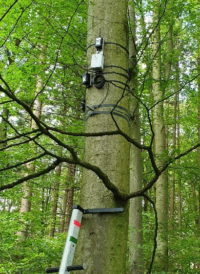

Messwerte Buche Ludwigshöhe Ebersberg (stündlich aktualisiert)
Die in diese Grafik gezeigten Messdaten stammen von einer Buche, die im Ebersberger Stadtwald, etwa 120 m vom Museum Wald und Umwelt entfernt steht. In 3 Höhen wurden Sensoren angebracht, die Temperatur und relative Luftfeuchte messen, zum Vergleich gibt es einen Sensor am Museum.
Im Oberboden sind 3 Sensoren eingebaut, die neben der Temperatur auch das verfügbare Bodenwasser erfassen. Letzteres als Prozentwert der maximalen Speicherkapazität.
Die Messwerte werden alle 20 Minuten per Funk (LoRa) ins Museum gesendet, dort empfangen und über einen Mini-PC ausgewertet.
